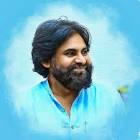

The Power Star is a Demi-God figure in the Telugu states. This actor and politician is one of the most popular figures in Indian cinema and politics. His career, spanning over 26 years in the film industry, is the inspiration for this generation of artists. He entered into politics as a youth wing leader of the Praja Rajyam Party, founded by his brother Chiranjeevi, but he quit the party as he merged his party into the Indian National Congress Party. Later, in 2014, he founded his own political party, “Jana Sena”, which runs in two Telugu states. He was the most searched man on Google in the year 2014. He constantly appears on the Forbes 100 list of India. Despite his successful career, he faced many challenges in his film and political career.
